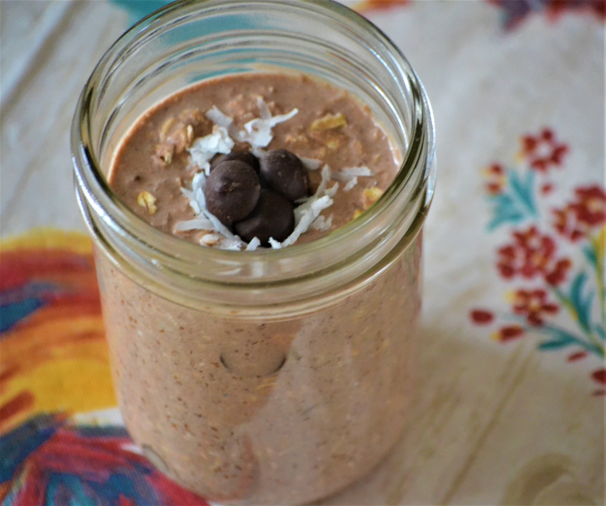

Home
Chocoloate Coconut Overnight Oats

Recipe
Ingredients
- 1 cup chocolate-flavored almond milk
- 3/4 cup old-fashioned rolled oats
- 1 tablespoon chia seeds
- 1 tablespoon maple syrup
- 1 tablespoon packed shredded sweetened coconut
- 1 tablespoon unsweetened cocoa powder
- 1 splash vanilla extract
Steps
- In a large pot, over medium heat, combine tomato sauce, tomatoes, onion and Italian seasoning
- In a large skillet over medium heat, cook bacon until slightly crisip. Drain and stir into the pot.
- In the same skillet over medium heat, cook sausage until brown. Drain and stir into the pot.
- In the same skillet over medium heat, cook the beef until brown. Drain and stir into the pot.
- Stir the barbeque sauce and chili powder into the pot; taste and adjust seasonins. Stir in the kidney beans and chocolate and simmer until
flavors are well blended. Serve.